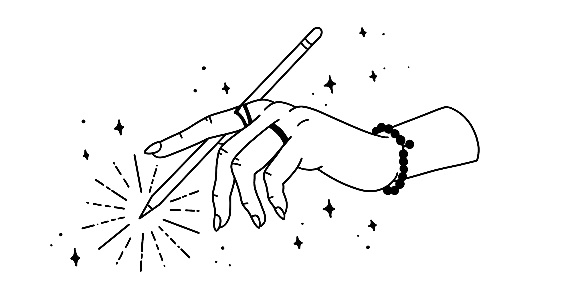

Blogbeiträge
Es sind die „Human Skills”, die uns zu großartigen DesignerInnen machen
Münster, 14. August 2023
Wie können wir als DesignerInnen gute Verbindungen zu uns selbst, untereinander und miteinander aufbauen? Wir brauchen gute „Human Skills” ...

Philosophie des Designs: Gute Dinge, die den Alltag verzaubern.
Münster, 01. August 2023
Mit Design habe ich meine Berufung gefunden. Gestalterische Grundsätze sind mir wichtig, weil sie sicherstellen, dass ein Design „funktioniert“ ...

Warum tue ich, was ich tue?
Münster, 22. Juli 2023
Schon als Kind liebte ich es, Dinge zu erschaffen, die ursprünglich nur in meiner Fantasie existierten. Ich habe zum Beispiel LEGO Objekte ohne Baupläne gebaut und ganze Welten erschaffen ...